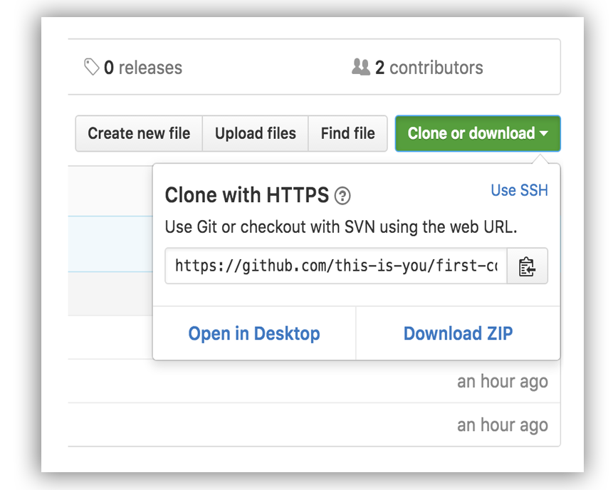

Git Committed
by Rob Hernandez
Sr. Systems Engineer @nebulaworks

What is git?
~$ man git
Git is a fast, scalable, distributed revision control system with an
unusually rich command set that provides both high-level operations and
full access to internals.
...Its a way to manage a set of files over time
What can git manage?
Text files
Binary files
Git can be used to manage any kind of file
My first PR

My fix
diff --git a/salt/modules/freebsdpkg.py b/salt/modules/freebsdpkg.py
index b3bfe1a3d9..63e0a4cb87 100644
--- a/salt/modules/freebsdpkg.py
+++ b/salt/modules/freebsdpkg.py
@@ -85,7 +85,7 @@ def refresh_db():
__salt__['cmd.run']('portsnap update')
-def install(name, **kwargs):
+def install(name, *args, **kwargs):
'''
Install the passed package
Straight forward enough
Resulted in
To get this merged required
This was a lot for just a oneline change
Where to start?
Whose making the changes?
commit 28b1edb4a5a823c910a5d86ea3514ab982bcf3d1
Author: Rob Hernandez <rob@sarcasticadmin.com>
Date: Fri Feb 1 12:16:59 2019 -0800
Updates to vim dictionary
Configure .gitconfig
Add your name and email
git config --global user.name "Rob Hernandez"
git config --global user.email "rob@sarcasticadmin.com"config created in user's ~/.gitconfig
~$ cat ~/.gitconfig
[user]
name = Rob Hernandez
email = rob@sarcasticadmin.comWithout a .gitconfig
Unable to identify the author
commit e0c03273720e088b157f53611ba4483b18d4cba6 (HEAD -> master)
Author: Minion <minion@thinkpad230x.local>
Date: Sun Feb 24 12:15:31 2019 -0800
Adding a new file
uses the info about the current user and system
Bonus! Remotes will track contributions
A simple git workflow

Find a repo
First Contributors on Github
Fork the project repo


Get the URL or SSH string of fork

git workflow
Clone the repo down
~$ git clone git@github.com:sarcasticadmin/first-contributions.gitNavigate into the repo
~$ cd first-contributionsWhat did git clone do?
Retrieved the source code
~$ tree -L 1
.
|-- CODE_OF_CONDUCT.md
|-- Contributors.md
|-- LICENSE
|-- README.md
|-- additional-material
|-- assets
|-- github-desktop-old-version-tutorial.md
|-- github-desktop-tutorial.md
|-- github-windows-vs-code-tutorial.md
|-- github-windows-vs2017-tutorial.md
|-- gitkraken-tutorial.md
|-- package-lock.json
`-- translations
3 directories, 10 files
Additionally git clone
Adds a remote
~$ git remote -v
origin git@github.com:sarcasticadmin/first-contributions.git (fetch)
origin git@github.com:sarcasticadmin/first-contributions.git (push)Sets the default branch
~$ git status
On branch master
nothing to commit, working tree cleandefault branch? master?
the fattest and longest span is the trunk(master), not the branches
Create a branch for your changes
~$ git checkout -b mychanges-1~$ git status
On branch mychanges-1
nothing to commit, working tree clean
We're now on our new branch
Lets modify the branch
~$ cat << EOF >> Contributors.md
- [Rob Hernandez](https://github.com/sarcasticadmin)
EOF~$ git statusgit detected a change!
Stage the change
~$ git add Contributors.md~$ git statusgit staged the change!
Commit it to the branch
~$ git commit -m "Add rob to Contributors list"~$ git status
On branch mychanges-1
nothing to commit, working tree clean
what happened to the change?
Check the git log
~$ git loggit workflow
Push up the commit
~$ git push origin mychanges-1Pre Pull Request
check repo documentation
check existing issues/pull requests
Submit the PR
submit against the upstream master
include a detailed description
Merged upstream
Other considerations
- Pull updates from upstream repo
- Merge conflict
Pull updates from upstream
Configure upstream
~$ git add remote upstream https://github.com/firstcontributions/first-contributions.git~$ git remote -v
origin git@github.com:sarcasticadmin/first-contributions.git (fetch)
origin git@github.com:sarcasticadmin/first-contributions.git (push)
upstream https://github.com/firstcontributions/first-contributions.git (fetch)
upstream https://github.com/firstcontributions/first-contributions.git (push)Update master upstream
~$ git checkout master
~$ git pull --rebase upstream masterAlways keep local master identical to upstream master
Other considerations
- Pull updates from upstream repo
- Merge conflict
Merge conflict
Now what?
Other considerations
- Pull updates from upstream repo
- Merge conflict
Example repo
First Contributors on Github
Thank you